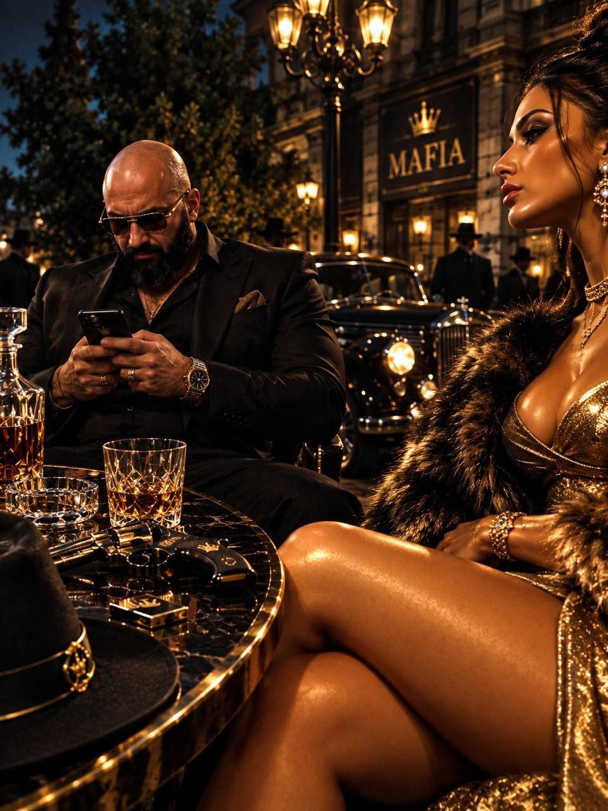

Ваша длина:
0
Рейтинг
⚡
марми
мафия
Змейка с друзьями и голосовым чатом
🌐 Открыть в браузере
В браузере работает голосовой чат и можно установить игру на телефон
▶ Играть здесь

м
а
р
м
и
м
а
ф
и
я
⚪ Мирные
Авто
🟠 Мафия
Играть
🔗 Позвать друга
Подключение к серверу…
📲 Установить на телефон
📷 Загрузите своё фото
📷 Фото на карточку
🖼 Выбрать фото
На фото должно быть видно лицо
📸 Снять
↺ Ещё раз
✅ Готово
Отмена
Сменить скин
Собрать змейку
Графика:
◀
▶
Собрать змейку
Сохранить
Каждое нажатие красит одно колечко от головы. Нажмите цвет несколько раз — полоса станет толще
Сбросить
Сохранить
📲 Установка на iPhone
✕
‹ Назад
Дальше ›
⬇
Нажмите
Поделиться ⬆
внизу экрана →
«На экран Домой»
👥